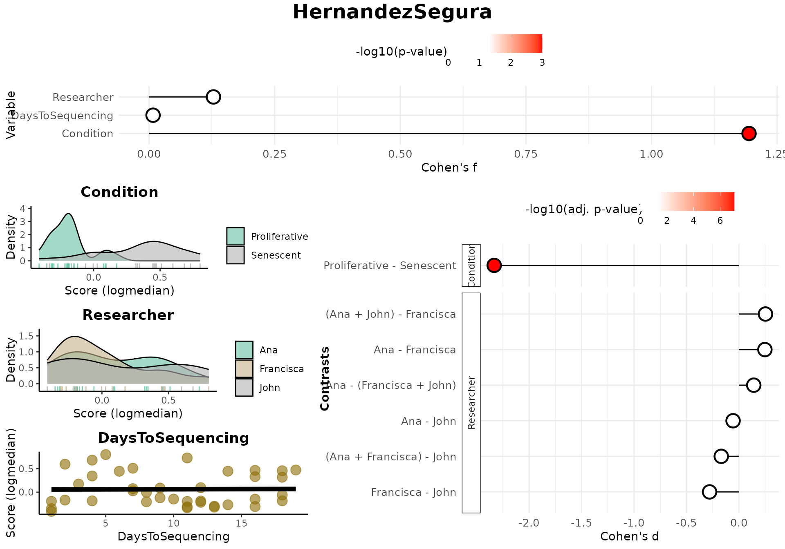
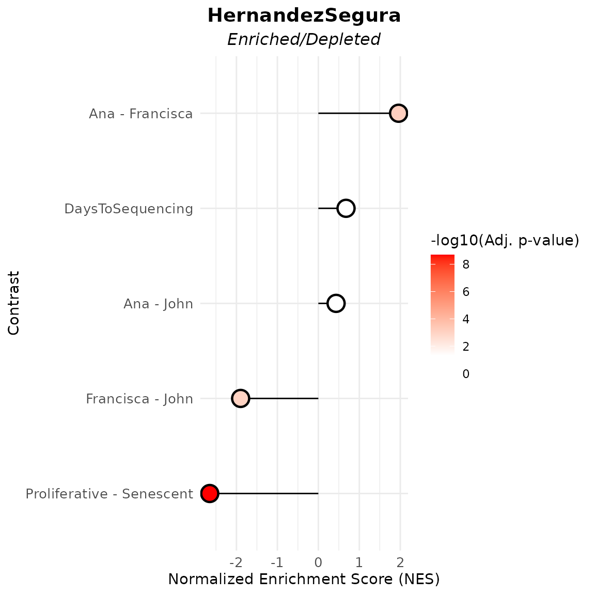

This vignette provides a comprehensive introduction to the markeR package, focusing on its Discovery Mode. The discovery mode was designed for users who are interested in quantifying a known, robust gene set in a given dataset to explore associations with other phenotypic or clinical variables. This approach is particularly suited to hypothesis generation where the phenotype marked by the gene set is of known biological or clinical relevance.
Installation
The user can install the development version of markeR from GitHub with:
# install.packages("devtools")
devtools::install_github("DiseaseTranscriptomicsLab/markeR")Case-study: Senescence
We will be using an already pre-processed gene expression dataset,
derived from the Marthandan et al. (2016) study (GSE63577), that
includes human fibroblast samples cultured under two different
conditions: replicative senescence and proliferative control. The
dataset has already been filtered and normalized using the
edgeR package. For more information about the dataset
structure, see the help pages for ?counts_example and
?metadata_example.
This dataset serves as a working example to demonstrate the main functionalities of the markeR package. In particular, it will be used to showcase the two primary modules designed for benchmarking gene signatures:
- Score: calculates expression-based signature scores for each sample, and
- Enrichment: evaluates the over-representation of gene signatures within ranked gene lists.
To illustrate the usage of markeR, we use the
HernandezSegura gene set: A transcriptomic gene set
identified by Hernandez-Segura et al. (2017) as consistently altered
across multiple senescence models. This set includes information on the
directionality of gene regulation. It has shown strong performance in
classification and enrichment analyses, including in the original paper
of markeR, and also in the Tutorial on the Benchmarking Mode of
markeR.
# Load example gene sets
data("genesets_example")
HernandezSegura_GeneSet <- list(HernandezSegura=genesets_example$HernandezSegura)
print(HernandezSegura_GeneSet) ## $HernandezSegura
## gene enrichment
## 1 ACADVL 1
## 2 ADPGK 1
## 3 ARHGAP35 -1
## 4 ARID2 -1
## 5 ASCC1 -1
## 6 B4GALT7 1
## 7 BCL2L2 1
## 8 C2CD5 -1
## 9 CCND1 1
## 10 CHMP5 1
## 11 CNTLN -1
## 12 CREBBP -1
## 13 DDA1 1
## 14 DGKA 1
## 15 DYNLT3 1
## 16 EFNB3 -1
## 17 FAM214B 1
## 18 GBE1 1
## 19 GDNF 1
## 20 GSTM4 -1
## 21 ICE1 -1
## 22 KCTD3 -1
## 23 KLC1 1
## 24 MEIS1 -1
## 25 MT-CYB 1
## 26 NFIA -1
## 27 NOL3 1
## 28 P4HA2 1
## 29 PATZ1 -1
## 30 PCIF1 -1
## 31 PDLIM4 1
## 32 PDS5B -1
## 33 PLK3 1
## 34 PLXNA3 1
## 35 POFUT2 1
## 36 RAI14 1
## 37 RHNO1 -1
## 38 SCOC 1
## 39 SLC10A3 1
## 40 SLC16A3 1
## 41 SMO -1
## 42 SPATA6 -1
## 43 SPIN4 -1
## 44 STAG1 -1
## 45 SUSD6 1
## 46 TAF13 1
## 47 TMEM87B 1
## 48 TOLLIP 1
## 49 TRDMT1 -1
## 50 TSPAN13 1
## 51 UFM1 1
## 52 USP6NL -1
## 53 ZBTB7A 1
## 54 ZC3H4 -1
## 55 ZNHIT1 1
data(counts_example)
# Load example data
counts_example[1:5,1:5]## SRR1660534 SRR1660535 SRR1660536 SRR1660537 SRR1660538
## A1BG 9.94566 9.476768 8.229231 8.515083 7.806479
## A1BG-AS1 12.08655 11.550303 12.283976 7.580694 7.312666
## A2M 77.50289 56.612839 58.860268 8.997624 6.981857
## A4GALT 14.74183 15.226083 14.815891 14.675780 15.222488
## AAAS 47.92755 46.292377 43.965972 47.109493 47.213739For illustration purposes of different variable types, let’s imagine
we also had two additional variables: one indicating the number of days
between sample preparation and sequencing
(DaysToSequencing), and another identifying the person who
processed each sample (researcher). These variables are
hypothetical and not part of the original study design.
data(metadata_example)
set.seed("123456")
metadata_example$Researcher <- sample(c("John","Ana","Francisca"),39, replace = T)
metadata_example$DaysToSequencing <- sample(c(1:20),39, replace = T)
head(metadata_example)## sampleID DatasetID CellType Condition SenescentType
## 252 SRR1660534 Marthandan2016 Fibroblast Senescent Telomere shortening
## 253 SRR1660535 Marthandan2016 Fibroblast Senescent Telomere shortening
## 254 SRR1660536 Marthandan2016 Fibroblast Senescent Telomere shortening
## 255 SRR1660537 Marthandan2016 Fibroblast Proliferative none
## 256 SRR1660538 Marthandan2016 Fibroblast Proliferative none
## 257 SRR1660539 Marthandan2016 Fibroblast Proliferative none
## Treatment Researcher DaysToSequencing
## 252 PD72 (Replicative senescence) Ana 6
## 253 PD72 (Replicative senescence) Ana 18
## 254 PD72 (Replicative senescence) John 19
## 255 young Ana 2
## 256 young Francisca 9
## 257 young John 10Score-Based approaches
The Score module in markeR quantifies
the association between a gene signature and phenotypic variables by
calculating a score for each sample based on the expression of genes in
the signature. This score can then be correlated with other variables,
such as clinical or experimental conditions:
- Quantifies associations between phenotype variables and a gene signature score using Cohen’s effect sizes and p-values.
- Visualizes results through lollipop plots, contrast plots, and distribution plots.
This is useful for identifying:
- Biological relationships (e.g., phenotype-score associations)
- Technical confounders (e.g., batch effects)
Outputs
The main function returns a structured list with:
-
overall: Effect sizes (Cohen’s f) and p-values for each variable. -
contrasts: For categorical variables, pairwise or grouped comparisons using Cohen’s d with BH-adjusted p-values. -
plot: A combined visualization showing:- Lollipop plot of effect sizes (Cohen’s f)
- Distribution plots of the score by variable (density or scatter)
- Lollipop plots of contrasts (Cohen’s d) for categorical variables, if applicable
-
plot_overall,plot_contrasts,plot_distributions: Individual components of the combined plot.
Controlling Contrast Resolution
The mode parameter determines the level of contrast
detail for categorical variables:
-
"simple": All pairwise contrasts between group levels (e.g., A vs B, A vs C, B vs C). -
"medium": One group vs. the union of all others (e.g., A vs B+C+D). -
"extensive": All algebraic combinations of group levels (e.g., A+B vs C+D).
Results
For this example, we use:
- The HernandezSegura gene signature
- The
logmedianscoring method -
mode = "extensive"for thorough contrast analysis
We also include two synthetic phenotypic variables:
-
Researcher— a categorical variable representing who processed each sample -
DaysToSequencing— a numeric variable indicating time between preparation and sequencing
Though artificial, these mimic potential technical covariates. Strong associations between these and the score could indicate batch effects, where technical variation may confound biological interpretation.
results_scoreassoc_bidirect <- Score_VariableAssociation(data = counts_example,
metadata = metadata_example,
cols = c("Condition","Researcher","DaysToSequencing"),
method="logmedian",
gene_set = HernandezSegura_GeneSet,
mode="extensive",
nonsignif_color = "white", signif_color = "red", saturation_value=NULL,sig_threshold = 0.05,
widthlabels=30, labsize=10, title=NULL, titlesize=14, pointSize=5, discrete_colors=NULL,
continuous_color = "#8C6D03", color_palette = "Set2")
results_scoreassoc_bidirect$Overall## Variable Cohen_f P_Value
## 1 Condition 1.19407625 1.267423e-08
## 2 Researcher 0.12816159 7.458318e-01
## 3 DaysToSequencing 0.00792836 9.617953e-01
results_scoreassoc_bidirect$Contrasts## Variable Contrast Group1 Group2
## 1 Condition Proliferative - Senescent Proliferative Senescent
## 2 Researcher Ana - John Ana John
## 3 Researcher Ana - Francisca Ana Francisca
## 4 Researcher Francisca - John Francisca John
## 5 Researcher Ana - (Francisca + John) Ana Francisca + John
## 6 Researcher (Ana + Francisca) - John Ana + Francisca John
## 7 Researcher (Ana + John) - Francisca Ana + John Francisca
## CohenD PValue padj
## 1 -2.33302465 1.267423e-08 8.871962e-08
## 2 -0.05584444 9.021669e-01 9.021669e-01
## 3 0.24731622 4.904610e-01 8.034391e-01
## 4 -0.27989036 5.477802e-01 8.034391e-01
## 5 0.14113793 6.646037e-01 8.034391e-01
## 6 -0.16850285 6.886621e-01 8.034391e-01
## 7 0.25285837 4.472210e-01 8.034391e-01Enrichment-based approaches
The GSEA_VariableAssociation() function evaluates how
phenotypic variables are associated with gene set
activity, using enrichment scores derived from gene expression
statistics (B- or t-statistics). This allows users to understand whether
a gene set is enriched or depleted in relation to different sample
attributes.
Outputs
The GSEA_VariableAssociation() function returns a list
with two elements:
-
data: A tidy data frame of GSEA results. For each variable contrast, this includes:- Contrast: The comparison performed (e.g., A - B, A - (B+C))
- Statistic: The metric used for gene ranking (either t or B)
- NES: Normalized Enrichment Score
- Adjusted p-value: Multiple-testing corrected p-value (e.g., Benjamini–Hochberg)
- Gene Set Name: The gene set being tested
-
plot: Aggplot2object showing the NES and significance of each contrast as a lollipop plot:- Point position reflects NES (directional enrichment)
- Point color reflects adjusted p-value significance
- Dashed lines represent contrasts with negative NES under the B statistic, indicating likely non-alteration
Output Interpretation
Depending on the statistic used (t or B),
the interpretation of results varies:
-
Negative NES (Normalized Enrichment Score):
- t statistic: A negative NES implies the gene set is depleted in over-expressed genes — i.e., genes in the set are under-expressed relative to others.
- B statistic: A negative NES suggests the gene set is less altered than most other genes — indicating a lack of strong expression change.
-
Dashed Lines in the Plot:
- Dashed lines denote contrasts with negative NES using the B statistic, indicating gene sets that are putatively not altered.
-
Subtitle Differences in the Plot:
- When using the B statistic, the plot subtitle is “Altered Contrasts”.
- When using the t statistic, the subtitle becomes “Enriched/Depleted Contrasts”.
Example: Exploring Gene Set Enrichment by Variable
The following code evaluates how three phenotypic variables —
Condition, Researcher, and
DaysToSequencing — are associated with the
HernandezSegura gene set:
GSEA_VariableAssociation(
data = counts_example,
metadata = metadata_example,
cols = c("Condition", "Researcher", "DaysToSequencing"),
mode = "simple",
gene_set = HernandezSegura_GeneSet,
saturation_value = NULL,
nonsignif_color = "white",
signif_color = "red",
sig_threshold = 0.05,
widthlabels = 30,
labsize = 10,
titlesize = 14,
pointSize = 5
)## $plot
##
## $data
## pathway pval padj log2err ES NES
## <char> <num> <num> <num> <num> <num>
## 1: HernandezSegura 4.054712e-10 2.027356e-09 0.81403584 -0.6376777 -2.6518404
## 2: HernandezSegura 1.000000e+00 1.000000e+00 0.01197112 0.1098945 0.4331812
## 3: HernandezSegura 2.833357e-04 7.083392e-04 0.49849311 0.4485591 1.9590790
## 4: HernandezSegura 5.770535e-04 9.617559e-04 0.47727082 -0.4631808 -1.8972609
## 5: HernandezSegura 9.630623e-01 1.000000e+00 0.01542391 0.1689494 0.6760467
## size leadingEdge stat_used Contrast
## <int> <list> <char> <char>
## 1: 52 CNTLN, D.... t Proliferative - Senescent
## 2: 52 P4HA2, S.... t Ana - John
## 3: 52 NOL3, PL.... t Ana - Francisca
## 4: 52 MEIS1, S.... t Francisca - John
## 5: 52 BCL2L2, .... t DaysToSequencing